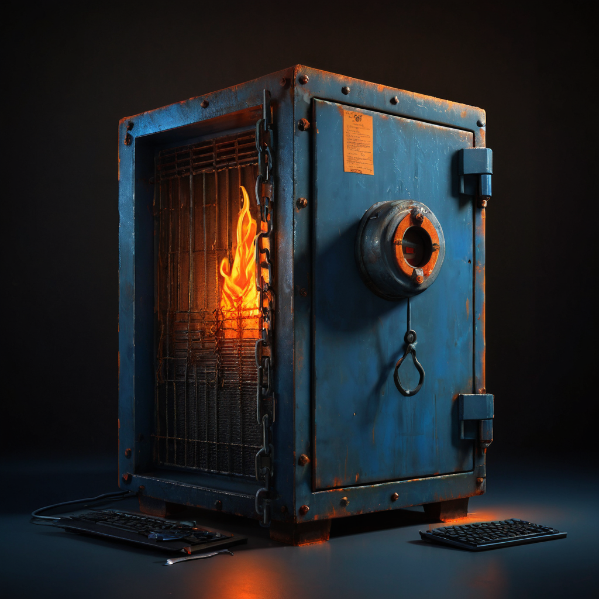

I scroll past a lot of crypto posts. This one from @OrangeGooey made me stop.
The post is short. It lists a handful of facts about a specific token. Under $100k market cap. Down 99.99% from its launch price. The most liquid coin on its layer 1. Cross-chain pairs on Base across multiple DEXes. Extremely distributed ownership. And the most burned LP on the chain.
That last claim is the one worth stopping on.
Originally shared by @OrangeGooey on X, the post makes a structured case for a token that most people would dismiss on price alone. The key claims:
The token is currently under $100,000 in market cap. It is down 99.99% from its launch price, which @OrangeGooey explicitly frames as an "inefficient starting price" rather than evidence of failure. It holds the title of most liquid coin on its layer 1 chain. It has been built out with liquidity pairs across multiple DEXes on Base (an Ethereum layer 2) and multiple tier 1 trading pairs. Ownership is described as extremely distributed. Its LP tokens are the most burned on the chain.
The post does not name the token in text. The original post includes an image that likely identifies it. See the Source section for the link and confirm the token name there before researching further.

The 99.99% drop is the kind of number designed to end a conversation before it starts. But the distinction @OrangeGooey is drawing is a real one. If a token launches at a price that reflects pure hype and unsustainable demand, the collapse back to something more realistic is not the same as organic failure. The "inefficient starting price" frame is worth taking seriously as a concept, even if you want to verify whether it applies in this specific case.
The burned LP claim is the structural piece that stands out.
When liquidity pool tokens are burned, the people who provided the initial liquidity lose the ability to pull it back out. The liquidity stays in the pool permanently. This removes a specific and common failure mode in small-cap tokens: the coordinated liquidity drain. It is a fact you can verify on chain, not a promise someone made in a post. That distinction matters.
Wide distribution matters for similar reasons. Concentrated token ownership is where coordinated selling lives. A genuinely distributed holder base does not guarantee anything, but it removes one of the cleanest attack vectors.
Liquidity on Base, across multiple DEXes and tier 1 pairs, suggests real effort went into making this tradeable. Getting listed on one thin pool is easy. Building market depth across multiple venues on a high-activity Ethereum L2 is more deliberate and more expensive.
What burned LP actually means. When liquidity is deposited into a DEX pool, the depositor receives LP tokens representing their share. Burning those tokens permanently destroys the claim. Nobody can withdraw that liquidity. This is verifiable on chain and is one of the few structural signals in small-cap crypto that is both meaningful and checkable in a single transaction lookup.
What distribution actually means. A token with many holders, none of whom control a large percentage, is harder to manipulate through coordinated selling. Distribution data is typically public via block explorers. The actual holder concentration should be verified independently before treating the claim as confirmed.
What Base liquidity means in practice. Base is a high-activity Ethereum L2 with real DEX infrastructure. Having multiple tier 1 pairs there is not trivial. It means someone did the work to bridge and build market depth. Whether that depth holds over time, and whether volume is organic, is more useful information than the price history alone.
What to keep in mind. A sub-100k market cap means low absolute liquidity even if the token leads on its chain. Meaningful trades can move the price significantly. That cuts in both directions. Every on-chain claim in the post should be verified independently before anything else.
The burned LP argument is the most interesting thing here to me. It is one of the few structural signals in small-cap crypto that is verifiable and actually distinguishes something from the noise. A burned LP is a transaction you can look up. That is what separates it from the chart posts and the narrative pitches.
@OrangeGooey is naming structural qualities rather than just posting a chart. That is the kind of post worth reading carefully rather than scrolling past.
What I would want to know first: what chain is this the most liquid coin on, and what does total DEX volume there look like? Being the top liquid asset on a thin chain is a different story than leading liquidity on a chain with real activity. That context shapes how to read the rest of the claims.
Worth doing the homework on.
If the structural claims hold up on chain, the next question is whether there is development activity or community behind the token, and whether the Base liquidity carries real organic volume or is sitting idle. Burned LP and distributed ownership are defensive qualities. They reduce downside risk. A credible use case or ongoing build is the offensive argument. That is what would make this a longer story worth following.
Source: X post by @OrangeGooey, https://x.com/i/web/status/2078150577846989197, retrieved 2026-07-17.
External references: The original post includes an image link (t.co/DOCMtd7u66) not loaded for this article. It likely identifies the specific token. Fetch and verify before publishing.